Go and get through our gallery. See MusE in action! Get the taste!
MusE 4.0
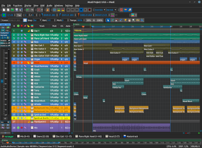{kind=link}
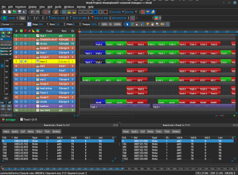
{kind=link}
MusE 3.1
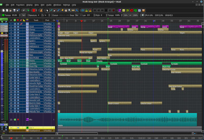{kind=link}
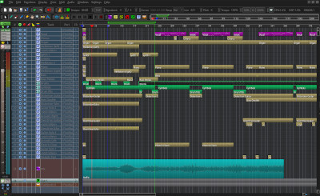
{kind=link}
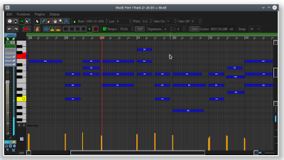
{kind=link}
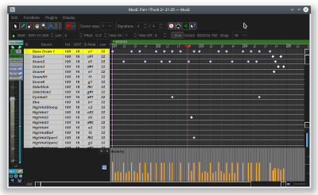
{kind=link}
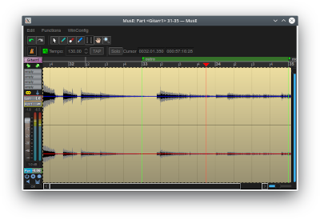
{kind=link}
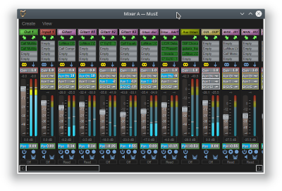
{kind=link}
MusE 2.1
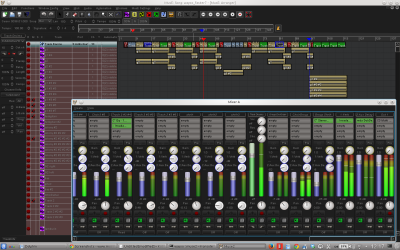{kind=link}
MusE 2.0
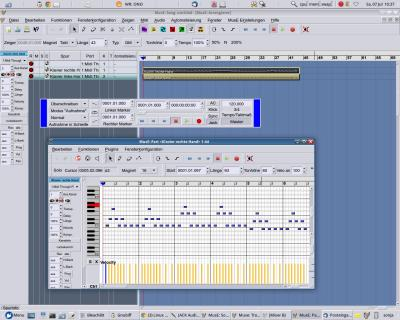{kind=link}
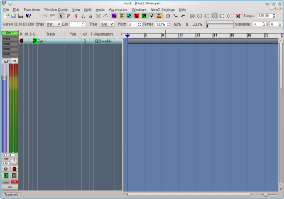
{kind=link}
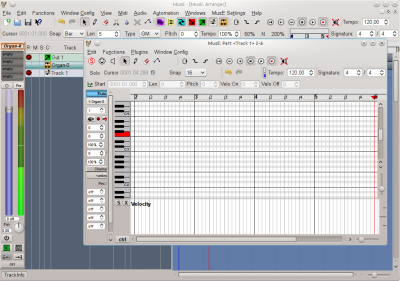
{kind=link}
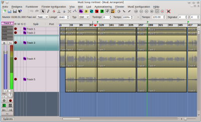
{kind=link}
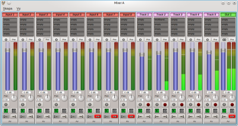
{kind=link}
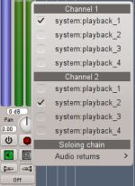
{kind=link}
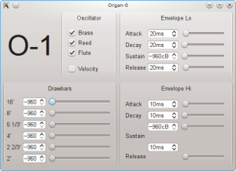
{kind=link}
MusE 2.0alpha
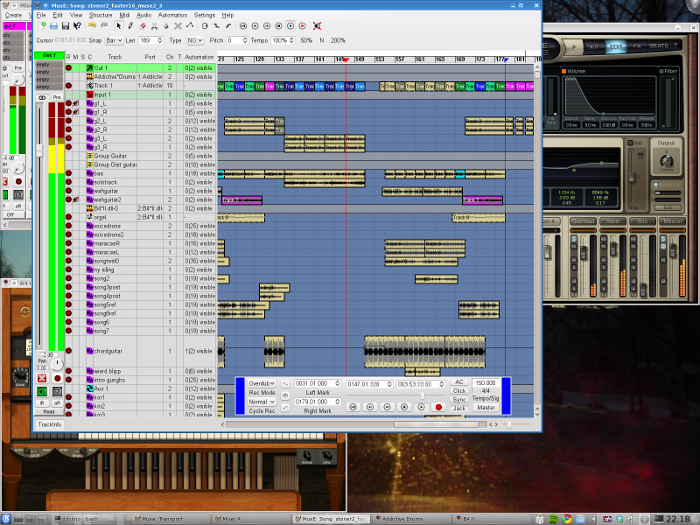{kind=link}
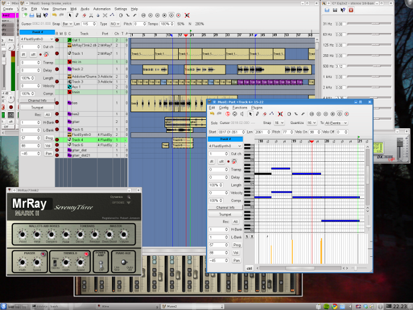
{kind=link}
Old stuff
MusE (evolution branch) (svn)
This was a work in progress picture that unfortunately likely will never enter the real world!
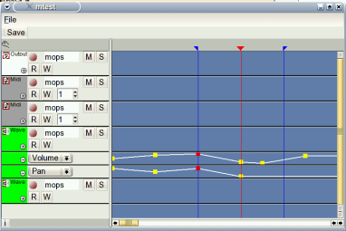{kind=link}
Stable: 0.7.x
MusE 0.7.2 CVS screenshot (new arranger design)
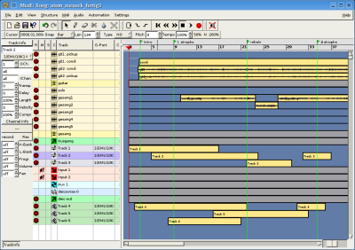{kind=link}
MusE 0.7.0 screenshot (new arranger)
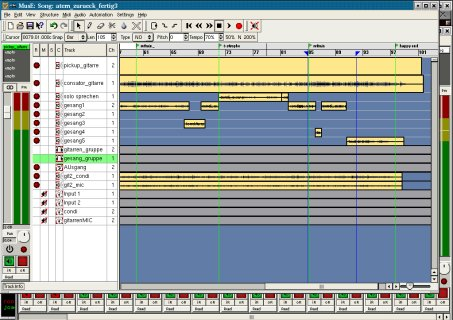{kind=link}
MusE 0.7preX Desktop with KDE and a song in progress
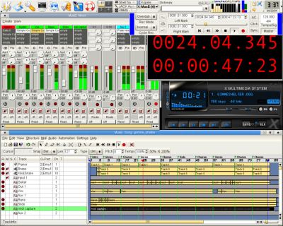{kind=link}
MusE 0.7pre3 Desktop with a song in progress
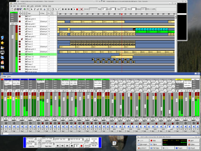{kind=link}
MusE 0.7pre1, note the old buttons which have changed
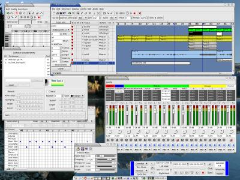{kind=link}
Stable: 0.6.3
Main Window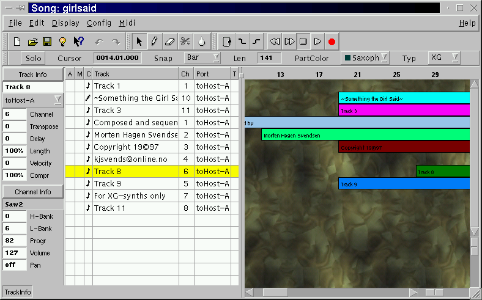
Main Window with audio tracks
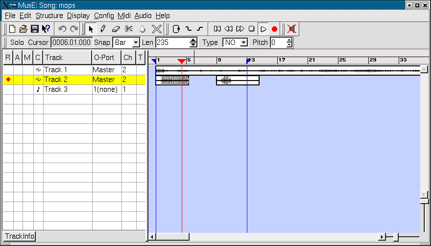
Pianoroll Editor
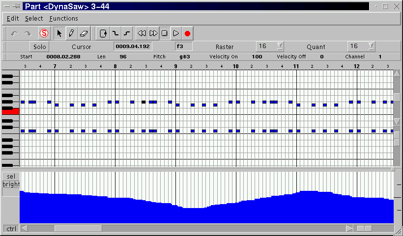
Midi Sync Configuration
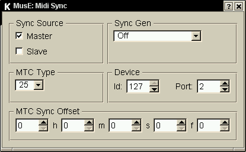
Score Editor
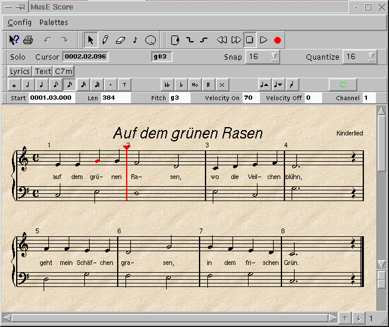
Mastertrack Editor
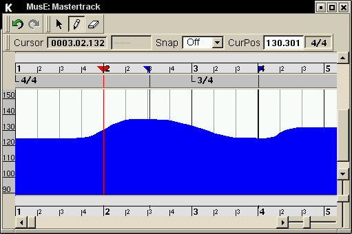
Transport Window
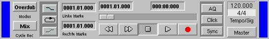
Midi Transformator
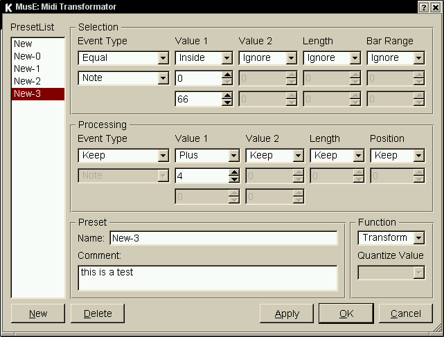
Midi Mixer
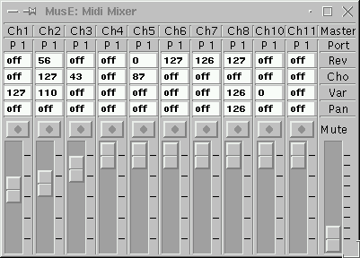
Audio Mixer
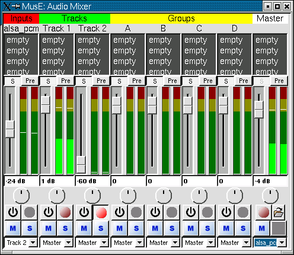
Freeverb Plugin
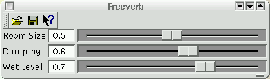
Select Plugin
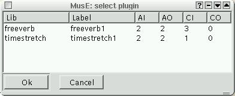
Midi Raw Device Configuration
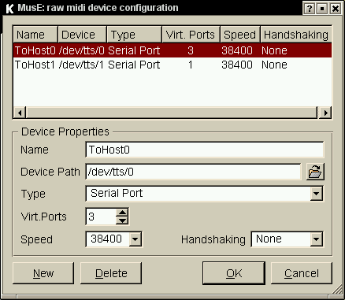
As you might have already guessed, this dialog was removed later because the alsa-project is now supporting this kind of devices so there was no need to have it twice. Midi Input Filter
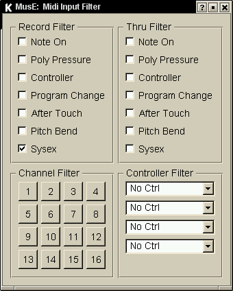